Fine-grained, long-tailed
The question
Can a model learn to name insects from microscope images when classes grow ever more alike further down the tree, and a few groups hold almost all the examples?
Background
Taxonomy sorts life into a hierarchy of ranks, from domain and kingdom down to genus and species. Experts traditionally classify insects by appearance, which is slow and does not always reach consensus. About 5.5 million insect species are estimated to exist, and only around one million have been described.
Taxonomy places every organism on a path of ranks, from domain down to species. Here: the western honey bee.
The BIOSCAN project, led by the International Barcode of Life consortium, images, sequences and barcodes specimens at scale to discover species and track them over time. In BIOSCAN-1M, every record has a BIN, but only 7.5% are labelled to species, and there are about ten times more BINs than species labels.
Fine-grained
Moving down the taxonomic tree, from order to family, genus and species, classes become ever more similar and harder to tell apart, and there are more of them, with fewer labelled examples each.
Agromyza
3 species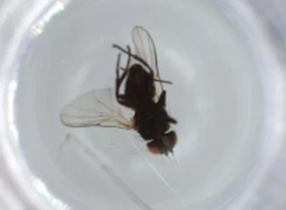
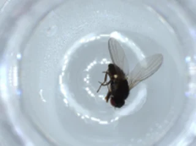
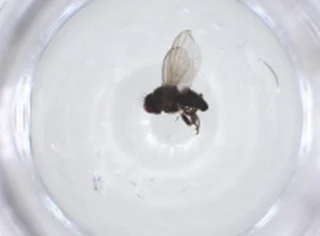
Leptosciarella
3 species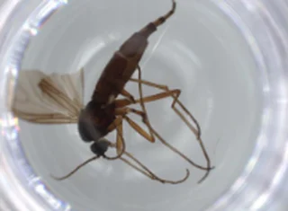
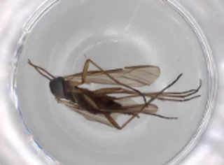
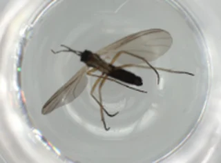
Atherigona
3 species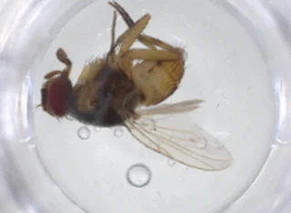
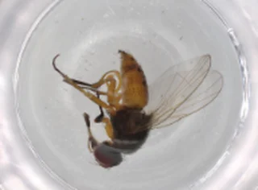
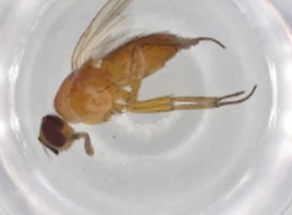
Drosophila
3 species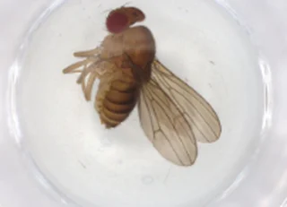
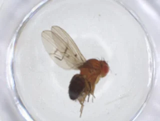
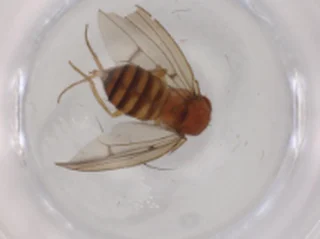
Chironomus
3 species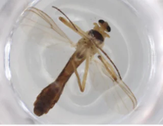
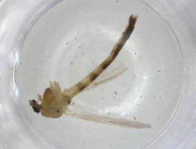
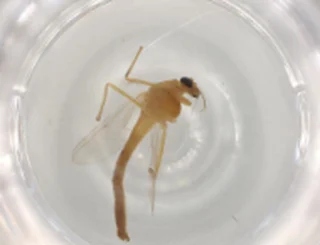
Limnophyes
3 species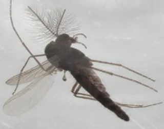
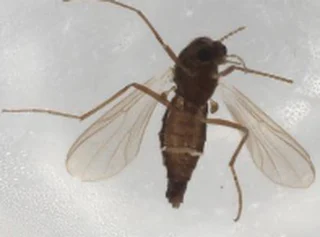
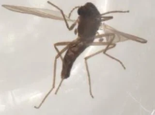
Three species of the same genus: three different labels, nearly the same look. Specimens from BIOSCAN-5M.
Long-tailed
Real-world insect data is also highly imbalanced. One order, Diptera, holds 896,324 of the 1,128,313 specimens, about 79%, while the smallest, Embioptera, has just 6. Models trained on such data tend to favour the common classes and struggle with the rare ones.
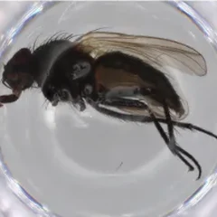
Diptera896,324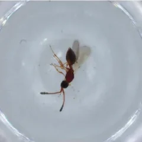
Hymenoptera89,311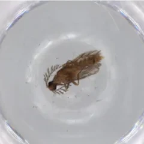
Coleoptera47,328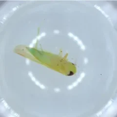
Hemiptera46,970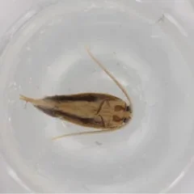
Lepidoptera32,538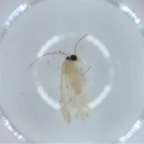
Psocodea9,635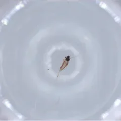
Thysanoptera2,088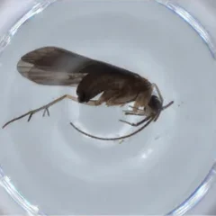
Trichoptera1,296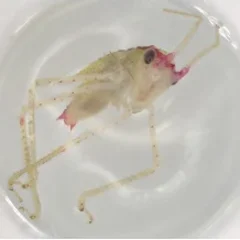
Orthoptera1,057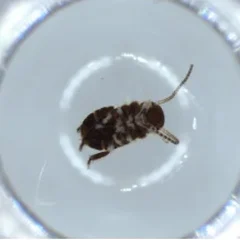
Blattodea824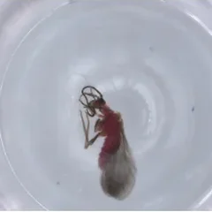
Neuroptera676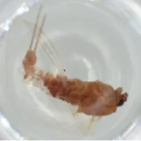
Ephemeroptera96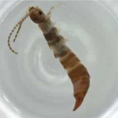
Dermaptera66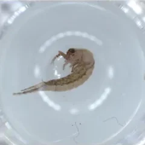
Archaeognatha63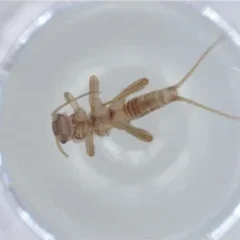
Plecoptera30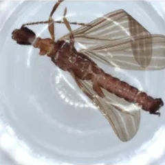
Embioptera6The same tail inside Diptera
Among flies alone, the same pattern repeats: of the 40 most common families, six hold 86% of the specimens, while the other 34 share the rest.
One million specimens, three views each
Each record pairs a high-quality microscope RGB image with the specimen's DNA barcode, Barcode Index Number and taxonomic labels, supporting multimodal research in biodiversity and AI.
Microscope image
High-resolution RGB photo, cropped and resized
DNA barcode
COI gene sequence
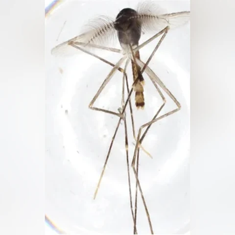
Barcode Index Number
Similar barcodes, one cluster
Taxonomy
Labelled by experts, as far as they could go
Example record from BIOSCAN-1M: a mosquito of the subfamily Culicinae.
Built for fair comparison
Two classification tasks were sampled from the data, each in three sizes, so the benchmark runs on anything from a laptop to a cluster.
Insect-Order
16 ordersDiptera-Family
40 families of fliesEvery subset is split class by class, so each class appears in training, validation and test.
What the models learned
Fine-tuned on BIOSCAN-1M, a vision transformer names insect orders almost perfectly and fly families with high accuracy. Averaged class by class, accuracy is lower: the rare classes of the long tail remain the hard part.
top-1 accuracy across 16 insect orders, on the large set
Averaged class by class, the rare orders pull accuracy down
top-1 accuracy across 40 Diptera families, on the large set
Averaged class by class, the gap is smaller than for orders
Diptera-family accuracy, from the small to the large training set
The same rise from small to large holds for insect orders
ViT-B/16 with cross-entropy loss, on the test sets. From 72 controlled experiments: 2 tasks, 3 sizes, 2 backbones, 2 losses and 3 seeds; cross-entropy did slightly better than focal loss.
What I led
- Led dataset design, defining taxonomy-aware sampling and class-balanced, stratified splits for the small, medium and large variants.
- Built the data pipelines for large-scale image preprocessing and HDF5 conversion, and structured metadata in CSV and JSON-LD.
- Automated the ML pipeline end to end, from data preparation to training and benchmarking, with reproducible configurations.
- Fine-tuned ResNet-50 and ViT with transfer learning across 72 controlled experiments.
- Benchmarked systematically, varying task, architecture, loss and seed to test robustness and generalization.
- Ensured rigor with repeated runs and standard metrics: accuracy, F1, confusion matrices and summary tables.